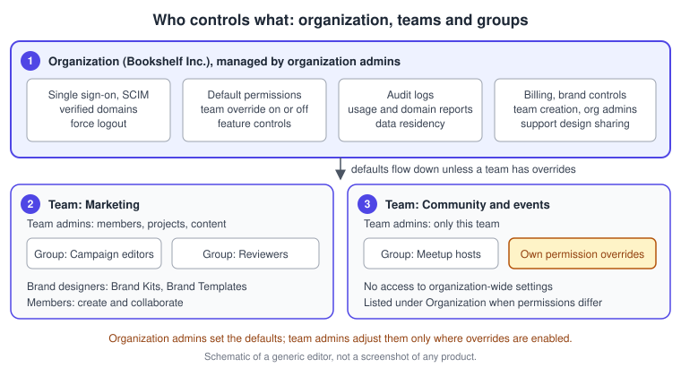
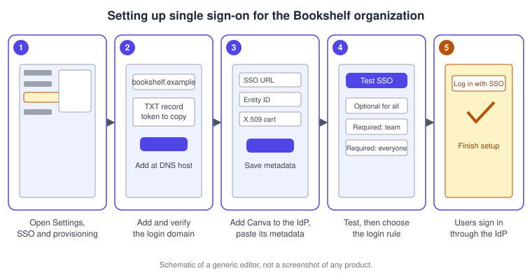
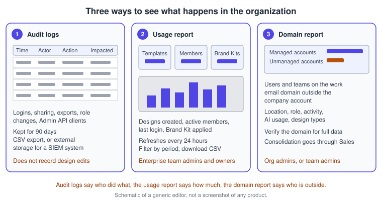

Administration, Enterprise and Security
|
This content was generated with the assistance of AI and should be verified against the official documentation before being relied on in production. |
This page was checked against the official Canva Help Center and Trust Center on 2026-11-07. It covers the controls that an administrator of Canva Enterprise uses to run Canva for many people: who may do what, how people sign in and are created and removed, what is recorded, how usage is measured, and where data is stored. Almost everything here needs the Enterprise plan; where a feature also exists for Campus, District or Education accounts, the section says so. Business has team roles and brand controls but not single sign-on, SCIM, audit logs or the Enterprise reports, and Canva Business replaced Canva Teams for new sign-ups on 2025-10-30 (existing Teams subscribers keep their plan without the Business-only features). Prices are not repeated here; Enterprise is sold through Canva’s Sales team and the comparison grid is published at https://www.canva.com/pricing/. Every feature on this page is documented in the Help Center as generally available, without a beta or preview label. The one AI feature on the page, Magic Answer, is part of Canva AI for Enterprise and is described below; the Help Center does not assign it to an allowance tier. The tiers in general are explained on Plans, Pricing and AI Allowance.
Canva is deployed continuously and the Help Center notes that navigation changes roll out gradually, so a label or a tab can sit in a different place from the one named here. Where two Help Center articles name a setting differently, this page says so. The drawings are original schematics of a generic editor, not screenshots.
The running example is Bookshelf, the book catalogue and reading-list app designed in the Figma sub-section. For this page, imagine that Bookshelf has grown into a company with its own Canva organization. Its launch campaign now involves a Marketing team and a Community and events team, an identity provider that all staff already use, a security review before the launch, and a course that trains volunteer meetup hosts.
The administration model
Canva Enterprise is organised in layers, and an administrator’s power depends on the layer.
-
The organization is the top level. It holds every user, every team and the global settings such as single sign-on, verified domains, SCIM, audit logs and data residency. Organization admins manage billing, brand controls, user provisioning and team creation.
-
A team is a workspace for a department, project or region. Team admins manage the members, projects and content of their own team and have no access to organization-wide settings.
-
A group is a set of people inside a team, organised by function, for example a reviewers group. Groups exist mainly to share folders with many people at once.
-
The roles are organization admin, team admin, brand designer and member. Only team admins can change a member’s role, and team admins and brand designers can publish Brand Templates. The full role matrix is on Teams, Roles and Groups.

Naming the organization admins
An organization admin can make an existing member another organization admin. Open Settings from the profile menu on the homepage, go to the People tab for Enterprise (the Organization Admins tab on Canva for Districts), select Assign an organization admin, type one or more email addresses and confirm. Only existing members of the organization can be assigned. To remove the role, use the more icon next to the administrator and choose Remove organization admin access. The Help Center states that this is available on the web only, so a person using a phone should open Canva in a mobile browser.
Default permissions and feature controls
The Controls and permissions section of Settings is where an organization admin decides, once, what everybody in every team may do. Each permission has an Organization default drop-down with four choices: everyone, team admins and team brand designers, team admins only, or no one. A second tab, Team management, holds a Team Overrides toggle for each permission. When overrides are on, a team admin can change that permission for their own team; when they are off, the organization default applies to every team automatically. The Permissions page also lists the teams whose settings differ from the defaults, shown next to Organization, and you can select a team to see or change its settings.
The feature controls are grouped into categories.
| Category | What the controls cover |
|---|---|
Magic and AI |
Turn Canva AI assistance on or off, decide who may use Dream Lab and who may use the Magic features |
Canva content |
How the team uses templates and elements in designs |
Team content |
How the team transfers or imports content |
Share and Publish |
How the team shares and publishes content |
Integrations |
Workflows between Canva and third-party apps |
Team access has its own rules in Settings, Controls, Team access: who can join a team (only invited people, anyone with a company email address, or anyone with one who requests to join), who can leave (setting this to admins only keeps content from walking out with departing people, whereas Everyone removes control over content transfer), and who can invite new members (everyone, members with admin approval, admins and brand designers, or admins only). Allowing everyone to invite means new members can incur a subscription charge. Group creation and visibility of member emails have their own drop-downs.
Support sharing and permission history
Under Settings, Data and privacy, an organization admin can allow team members to temporarily share an affected design with Canva Support when they ask for help; the setting applies to every team. A history of permission changes is available to organization admins in the audit log area (the Help Center describes it under Settings, Security, Audit Log).
Procedure: lock down the Bookshelf organization defaults
-
As an organization admin, open the profile menu on the homepage and choose Settings.
-
Open Controls and permissions, then Permissions, and search for the setting to change, for example who may use Dream Lab.
-
In the Organization default drop-down choose Team admins and team brand designers.
-
Open the Team management tab and switch Team Overrides off for that permission, so that the Marketing and Community and events teams both inherit the default.
-
Return to Permissions and check that no team is listed next to Organization with different permissions.
-
Open Controls, Team access and set Who can join this team? to Only invited people can join and Who can leave this team? to Admins only.
Single sign-on with SAML
Single sign-on (SSO) lets people sign in to Canva with the account that their organization already manages. Canva supports SAML 2.0. SSO login is available to Enterprise, Education and Campus; the setup article for Enterprise is written for organization admins, and you need an identity provider (IdP) that supports SAML 2.0 and access to your DNS so you can create a TXT record. Without an eligible plan the SSO and provisioning tab may be missing or may prompt you to upgrade.
The pieces of the setup are as follows.
-
Domain verification. You add the login domain and Canva shows a TXT record token. Adding the token to the domain’s DNS proves you control it. It also stops anybody from creating a Canva team on your company domain when domain capture is on. Verification usually finishes within 24 hours but DNS caching can stretch it to 72 hours. After verification, existing Canva users on that domain receive an email giving them 30 days to confirm that their account is used for work; if they do nothing, the account becomes affiliated with the organization. Contact Canva Support before changing an SSO domain, to avoid duplicate accounts.
-
The identity provider. The Help Center has guides for ADFS, Azure AD or Entra ID, Duo Security, Google, Okta, OneLogin and Salesforce. For any other provider, enter the Canva service-provider values: an ACS or reply URL of
https://www.canva.com/login/saml, an entity ID ofhttps://www.canva.com, and the SAML attributes NameID, Email, FirstName and LastName. The SAML assertion must be signed. If the organization has several teams, a TeamId attribute must also be configured. -
The metadata. You provide either the IdP’s metadata file or the three values, an SSO or login URL, an entity ID or issuer, and an X.509 public certificate. An optional single logout URL,
www.canva.com/logout/saml, ends the Canva session when the IdP session ends. -
Testing. A Test SSO button redirects you to the IdP and shows the attributes it returned, so you can check that they map correctly. A second route is to set the login option to optional, log out, and use Log in with SSO after Continue with email.
-
Force logout. An organization admin can expire the sessions of every logged-in user on a verified domain; when they return and are not using SSO they are asked to link their account to it.
Login rules and just-in-time provisioning
After the connection works, the Configure your settings drop-down chooses how people on the domain log in. SSO optional for everyone leaves other login methods open. SSO required for everyone on your team forces new users to sign up through SSO and forces existing team members to link their account and log in again through SSO, while people outside the team may still use other methods. SSO required for everyone (even outside of your team) also forces people with accounts on the domain but outside the team to link to the provider or change their email. Test the experience before making SSO required, and have people whose Canva account uses a company address and who are not meant to be members switch to a personal address first, or they can be locked out. If someone cannot get in, give them access to the Canva SAML app in the IdP, or change the setting to the team-only option.
Just-in-time (JIT) provisioning is a separate setting, available to Enterprise and Campus but not Education. When it is on, a user’s account is created the first time they log in with SSO, their details update whenever the IdP changes, and they are added to the team automatically. Members beyond the contracted seat count show in the next billing cycle. When JIT is off, people outside the team cannot use SSO, existing users' details stop updating and SCIM becomes the only way to provision members. If SSO is required and you have no other provisioning method, leave JIT on. SSO and JIT are independent of the Team access settings in the permissions area.
Procedure: set up SSO for Bookshelf
-
As an organization admin, choose Settings from the profile menu and open the SSO and provisioning tab.
-
On Domain verification select Add a domain, enter the company domain (the example uses
bookshelf.example), submit it and copy the TXT token. -
At the DNS host, add a TXT record with that token and wait for the verification email.
-
Open Single sign-on (SSO), select Set up SSO, choose the identity provider guide and add Canva to the provider, then continue.
-
Upload the provider’s metadata file, or enter the SSO URL, entity ID and certificate, and select Save metadata.
-
Select Test SSO, sign in at the provider and check that the returned attributes are mapped correctly.
-
Under Configure SSO settings set the login option to optional first, sign out and sign back in through Log in with SSO, and only then choose a required option.
-
Use the force logout icon next to the domain if existing sessions should be asked to link to SSO, and select Finish setup.

Linking accounts and keeping content
Existing members who already have a Canva account are asked to link it to the SSO provider the first time they log in with SSO. The Help Center also has articles on logging in with SSO, on linking an account and on keeping access to content when SSO is enabled, and on what to do when someone cannot log in. They are listed on the SSO overview page in the references.
SCIM provisioning and de-provisioning
SCIM (System for Cross-domain Identity Management) lets the identity provider create and remove Canva accounts, so that joiners and leavers do not need a separate step in Canva. The Help Center says it is available only to Canva Enterprise and Canva for Districts and is not available to new Canva Teams subscribers. Two limits are stated: for teams inside an organization, user provisioning and de-provisioning are supported, but provisioning users directly into specific teams and creating groups are not.
The flow is short. In Settings, SSO and provisioning, under Single sign-on (SSO) choose Manage, then Configure Provisioning, Add provisioning method, pick SCIM and turn on Enable SCIM user provisioning. Copy the access token that appears, which Canva regenerates every time the slider is toggled, and enter it in the identity provider. Guides exist for Okta, Azure AD, PingOne and Google; other providers follow their own documentation. When someone already has a Canva account with the provisioned email, Canva sends them an invitation to join the team instead, and they may be asked to link the account to SSO.
When the identity provider removes a person, they are removed from the Enterprise team at once and the account is locked. Designs that were not transferred stay in the team without an owner, and if the person is added back, the designs they used to own and that are still ownerless are given back to them. Ask leavers to transfer ownership first where you can. The token is a secret: keep it in the identity provider and in your password manager, never in a design, a document or a repository.
Audit logs
Audit logs record what people and systems do in an Enterprise organization, to help you watch for unauthorised activity and investigate incidents. They are available to Canva Enterprise and visible to organization admins. They are logged from the moment the organization joined Enterprise (or from the upgrade date, if it upgraded from Teams, or from the date a team joined) and stored for 90 days.
Open Settings, then the Audit logs tab, and select Activity to read the log in Canva, filtering with Search period. Each row shows a timestamp, the actor, the action and the impacted user, group, team, organization, app or design; selecting a row shows more. For events performed by an integration through the Admin API, the actor shows the client name and client ID. Download exports a CSV file. External Storage lets you set up an S3 bucket to receive the raw log data so that a SIEM system can read it.
The events cover apps (install, uninstall, update, authorise), the Admin API, content ownership transfers and copies, designs (create, view, share, trash, restore, delete, access changes and access requests), exports and bulk data downloads, folder access, groups, organization and role changes, the minimum team role permission, teams (add, update and remove users, join requests, team activity report creation) and users (create, update, delete, MFA backup codes, login and logout). The Help Center states that audit logs do not record information about changes to the contents of designs.
Procedure: review a week of activity before the launch
-
As an organization admin open Settings and the Audit logs tab, then select Activity.
-
Use Search period to choose the week before the launch.
-
Scan the Action column for design shares, exports and role changes made by people other than the campaign team, and select a row for the details.
-
Select Download to export the week as CSV, and file it with the launch checklist.
-
If a security tool should keep the data longer than 90 days, choose External Storage and follow the S3 setup.
Reports and the domain report
Two reports answer different questions.
The Usage report (the Help Center calls the area Reports) is for Enterprise team admins and owners. It gives an overview of designs created, active members, Brand Template activity, member activity and Brand Kit activity. The data refreshes every 24 hours and can be filtered by timeframe (7 days, 30 days, 12 months or a month), template owner and activity type, and downloaded as CSV. Template activity counts how often a template was used, published and shared; member activity shows each person’s role, last login, designs created, designs published, links shared and designs viewed; Brand Kit activity shows designs that did not use a Brand Kit and how often the Brand Kit was applied. The same figures help brand designers prove that Brand Templates and controls are being used.
The Domain report shows Canva use across your whole email domain, including people who use their work email outside the company account. It shows a usage summary (users, teams, designs created), designs published over time, AI usage in the last 12 months, account locations in six regions and preferred design types. See unmanaged accounts lists unmanaged users (location, role, teams, activity in the last 12 months) and teams (users, designs, Brand Kits, owner). For a verified organization domain, organization admins see every team; for a domain verified at team level, team owners and admins see only the teams they manage. A Manage AI permissions link lets you apply AI permissions to unmanaged users. Consolidating those users into the company account is done through the Account Executive or the Sales team. Domain reports are not yet available to Canva for Campus teams.

Magic Answer
Magic Answer is built into Canva AI for Canva Enterprise. It finds answers in the web or in your team’s Canva designs and Docs and returns a short summary together with the sources it used. You can use it in two ways. In Your designs, type a question in the search bar that starts with a question word (what, when, where, why, how or who) and ends with a question mark, or has at least five words, and press Enter; Start a conversation continues the thread. Or open Canva AI on the homepage, type the question naturally, select the gear icon for a source and choose Canva designs, then submit. Hovering over a source thumbnail shows the file name so you can check the original.
Magic Answer follows existing file permissions, so a person sees only content they can already open, and answers are not visible to others. It works only on text content such as Docs and designs, cannot analyse charts, images or spreadsheets, and supports English only. Like any AI tool it can be wrong, so verify important details in the sources. If it is missing, the person must be on an Enterprise team and an admin must enable the Who can use team content to generate AI responses setting.
Team apps
Team apps are apps that only your team can use. They add features to Canva, connect Canva to internal tools such as a content management system, or let you share an app privately before releasing it publicly. Any team member can build one by following the developer documentation, and then submits it for review. A team owner or admin releases or rejects it, and once released all team members can use it. Team apps never appear in the public Apps Directory. For Bookshelf, the "Bookshelf Covers" app that inserts book covers into designs could be released this way before it goes public. Building apps is covered on App Intents, and the public marketplace on Apps, Marketplace and Integrations.
Source: Canva Help Center: Team apps
Courses
A course sequences designs, which are called activities, so that a team can learn in order. Create one from Projects with Add new, then Course, or turn an existing folder into a course with More, Turn into a course. An activity can be a Resource or a Template; a template lets each learner edit their own copy and share it back. In the editor the activities appear in the navigation menu, and View as learner previews the experience (edits made while previewing are saved to a copy so the original does not change). Share the course with collaborators, then use Assign course to choose a group or individuals, optionally notify them with a message and copy the assignment link. The course’s Reporting tab counts learners who have not started, are in progress or have completed it.
Procedure: train Bookshelf meetup hosts
-
In Projects select Add new, then Course, and name it for the meetup hosts.
-
Add three activities: a welcome Doc, the "Book of the week" Brand Template as a Template activity, and a short checklist presentation.
-
Drag the activities into the right sequence and select Open Course to see it in the editor.
-
Select View as learner to try it, then Back to editing.
-
Select Assign course, create or choose the Meetup hosts group, turn on the notification toggle and select Assign.
-
Check the Reporting tab after a week to see who has started.
Slack, Microsoft Teams and Salesforce
Three work-tool integrations are common in an Enterprise rollout. The Slack and Microsoft Teams apps are available to all Canva users, and each person adds the app and connects their own account.
| Tool | What it does |
|---|---|
Slack |
Notifications for shares, mentions, replies, tasks and comments on your designs; reply to comments, grant access and share from Slack; design previews; create a Magic Design with |
Microsoft Teams |
Notifications for the same events, plus design previews in Teams. Organizations that restrict apps need a Teams administrator to allow it. |
Salesforce |
Fill designs with Salesforce data for accounts, contacts, opportunities and custom objects. Needs a Salesforce Professional, Enterprise or Unlimited plan, a team admin on both sides, and the Canva admin and Canva Sales User permission sets. Autofill is not on the Free plan. The app is not in the AppExchange directory; install it from Salesforce. |
Data residency
Enterprise, Campus and District organizations can choose where their data is stored. An organization admin opens Settings, then Data and privacy, and under Data residency chooses No Preference, United States or European Union, reviews the migration information and selects Confirm. New data goes to the chosen region shortly after confirmation. Supported existing data migrates automatically and may take 30 days or more. The control is disabled for 30 days after any change, and for as long as a migration runs, which includes the migration triggered when a new brand is added to the organization. Supported data types are designs and comments, media files, folders, audit logs and search indexes, with more promised. The setting is available only for the US and EU and is not supported for Canva China. The Help Center stresses that data residency is not a compliance solution: it can support internal hosting requirements, but you must consult your legal or compliance team.
Procedure: choose the EU region for Bookshelf
-
As an organization admin choose Settings, then Data and privacy.
-
Under Data residency open the drop-down and choose European Union.
-
Read the migration information, including the 30-day lock, and select Confirm.
-
Come back after a month to check that the control is enabled again before planning another change.
Security and trust pages
Canva publishes its security posture in the Trust Center. The Security page describes encryption in transit (TLS) and at rest (AES256), least-privilege access, a global CDN for availability, monitoring and alerting, secure development and staged releases, SSO and MFA options, in-app roles, and a bug bounty programme. It lists ISO 27001, AICPA SOC 2, AICPA SOC 3, PCI DSS and the Data Privacy Framework, and links to the Canva Security Profile. The Trust Center also has pages for privacy, safety, legal, compliance, procurement and education, which procurement and security reviewers use as their starting point. Legal protection for AI-generated content (Canva Shield) is covered on Licensing, Responsible AI and Canva Shield. Treat certification lists as a point-in-time statement and check the Trust Center when a review needs them.
Source: Canva: Security at Canva
Source: Canva: Trust Center
Where older guides are outdated
Older books describe Canva for Enterprise as brand controls, compliance and support, and treat a three-tier plan list as the whole picture. As of 2026-11-07 the Enterprise plan is documented with a multi-team organization structure, SSO, SCIM, audit logs with export to external storage, IP indemnity, an Admin API, domain reports, data residency, Magic Answer and onboarding support, and Canva Business replaced Canva Teams for new sign-ups on 2025-10-30. Courses are now a native project type with assignment and reporting, and Canva AI controls have their own category in the feature permissions. For the sub-section-wide list see What Changed Since Older Guides.